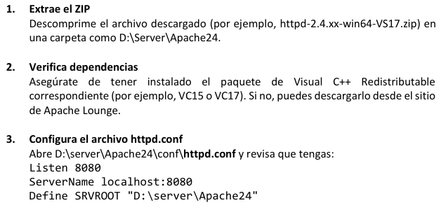

Semana 13: Desarrollo Backend con Python y Flask
Exploramos el desarrollo backend con Python, configuración de Apache para Python y el framework Flask.
Configuración del Entorno
Apache HTTP Server
Configuración básica para Apache en Windows:
# httpd.conf
Listen 8080
ServerName localhost:8080
Define SRVROOT "D:\server\Apache24"
DocumentRoot "${SRVROOT}/htdocs"

Archivo de configuración httpd.conf
Instalación de mod_wsgi
Configuración para integrar Python con Apache:
pip install mod_wsgi
# Configurar variable de entorno
set MOD_WSGI_APACHE_ROOTDIR=C:/Apache24
# Obtener configuración
mod_wsgi-express module-config
# Agregar al httpd.conf
LoadFile "C:/Python39/python39.dll"
LoadModule wsgi_module "C:/Python39/lib/site-packages/mod_wsgi/server/mod_wsgi.cp39-win_amd64.pyd"
Configuración WSGI
WSGIScriptAlias / "C:/webapps/miapp/app.wsgi"
<Directory "C:/webapps/miapp">
Require all granted
</Directory>
Fundamentos de Python
Sintaxis Básica
# Comentarios
# Esto es un comentario
""" Comentario multilínea """
# Variables
nombre = "Ana"
edad = 30
# Salida
print("Hola", nombre)
Estructuras de Control
# If-elif-else
if edad >= 18:
print("Mayor de edad")
elif edad == 17:
print("Casi mayor")
else:
print("Menor de edad")
# Bucles
for i in range(3):
print("Número:", i)
frutas = ["Manzana", "Banana", "Cereza"]
for fruta in frutas:
print("Fruta:", fruta)
Programación Orientada a Objetos
class Persona:
def __init__(self, nombre, edad):
self.nombre = nombre
self.edad = edad
def presentarse(self):
return f"Hola, soy {self.nombre} y tengo {self.edad} años."
class Estudiante(Persona):
def __init__(self, nombre, edad, carrera):
super().__init__(nombre, edad)
self.carrera = carrera
def estudiar(self):
return f"{self.nombre} está estudiando {self.carrera}."
alumno = Estudiante("Laura", 20, "Ingeniería")
print(alumno.presentarse())
print(alumno.estudiar())
Flask Framework
Instalación y primera aplicación
pip install flask
# app.py
from flask import Flask
app = Flask(__name__)
@app.route('/')
def hola():
return '¡Hola Mundo desde Flask!'
if __name__ == '__main__':
app.run(debug=True)
Primera aplicación en Flask
Resultado
Conceptos Clave
- @app.route: Decorador para definir rutas URL
- Request: Objeto para acceder a datos enviados por el cliente
- Response: Objeto para enviar respuestas al cliente
- render_template: Función para renderizar plantillas HTML
- Jinja2: Motor de plantillas para Flask
Estructura de Proyecto
Estructura típica de un proyecto Flask
Ejemplo Práctico: CRUD Estudiantes
1. Configurar base de datos MySQL
CREATE DATABASE escuela;
CREATE TABLE estudiantes (
IdEstudiante INT PRIMARY KEY AUTO_INCREMENT,
nomEstudiante VARCHAR(100),
dirEstudiante VARCHAR(150),
ciuEstudiante VARCHAR(100)
);
2. Conexión a MySQL (conexion.py)
import pymysql
def obtener_conexion():
return pymysql.connect(
host='localhost',
user='root',
password='tu_contraseña',
db='escuela',
cursorclass=pymysql.cursors.DictCursor
)
3. Aplicación Flask (app.py)
from flask import Flask, render_template, request, redirect
from conexion import obtener_conexion
app = Flask(__name__)
@app.route('/')
def formulario():
return render_template('formulario.html')
@app.route('/guardar', methods=['POST'])
def guardar():
nombre = request.form['nombre']
direccion = request.form['direccion']
ciudad = request.form['ciudad']
conexion = obtener_conexion()
with conexion.cursor() as cursor:
cursor.execute('INSERT INTO estudiantes VALUES (NULL, %s, %s, %s)',
(nombre, direccion, ciudad))
conexion.commit()
conexion.close()
return redirect('/')
4. Plantilla HTML (templates/formulario.html)
<!DOCTYPE html>
<html>
<head>
<title>Registro de Estudiantes</title>
</head>
<body>
<h1>Agregar Estudiante</h1>
<form action="/guardar" method="post">
<label>Nombre:</label><br>
<input type="text" name="nombre"><br>
<label>Dirección:</label><br>
<input type="text" name="direccion"><br>
<label>Ciudad:</label><br>
<input type="text" name="ciudad"><br>
<input type="submit" value="Guardar">
</form>
</body>
</html>
Formulario de registro de estudiantes